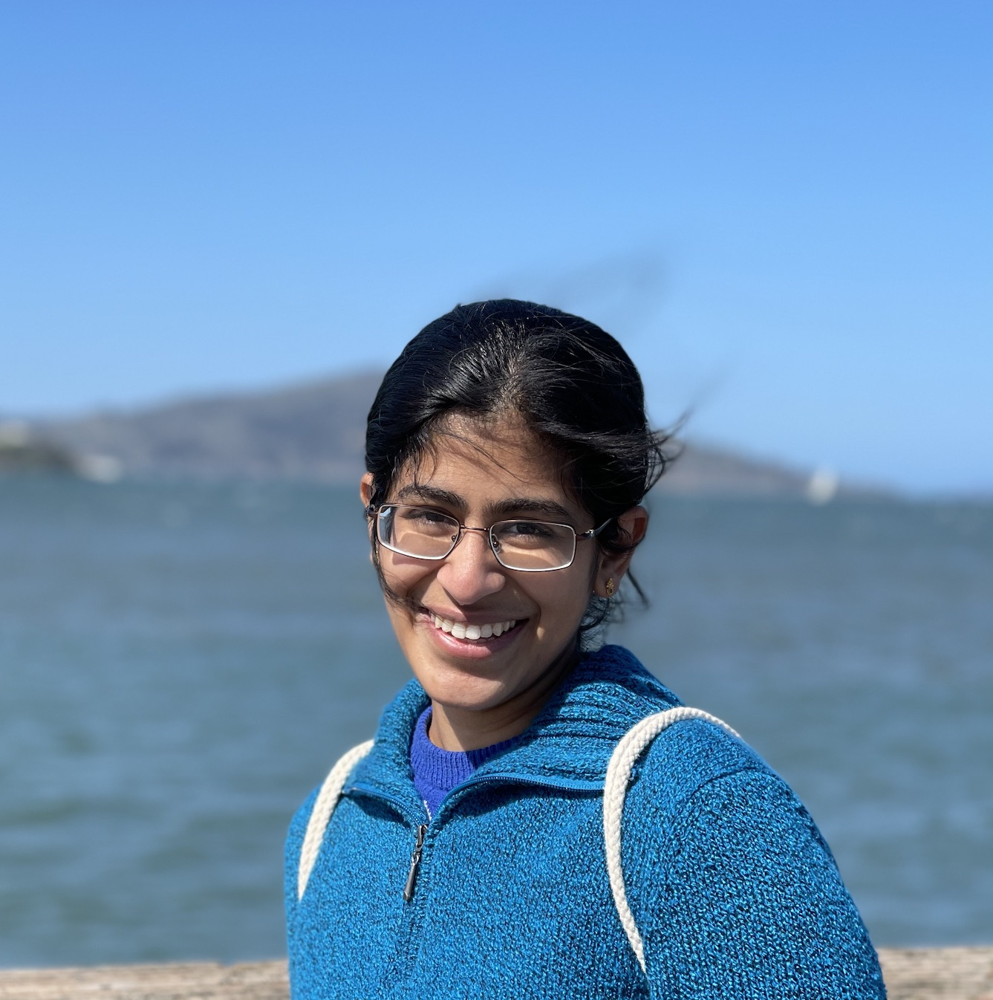
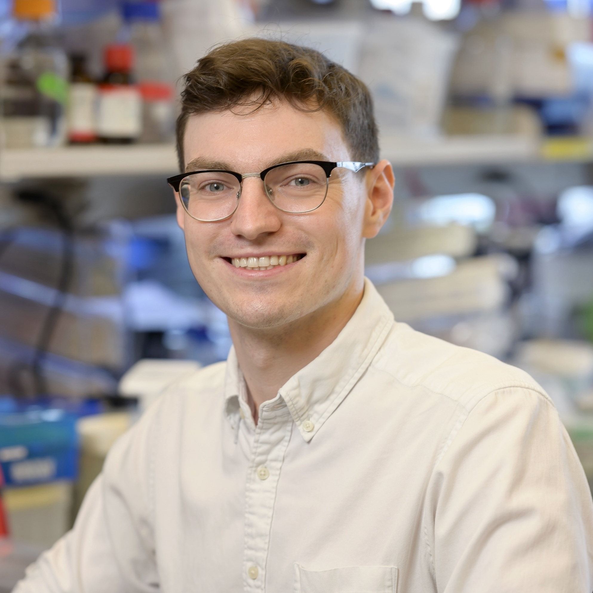
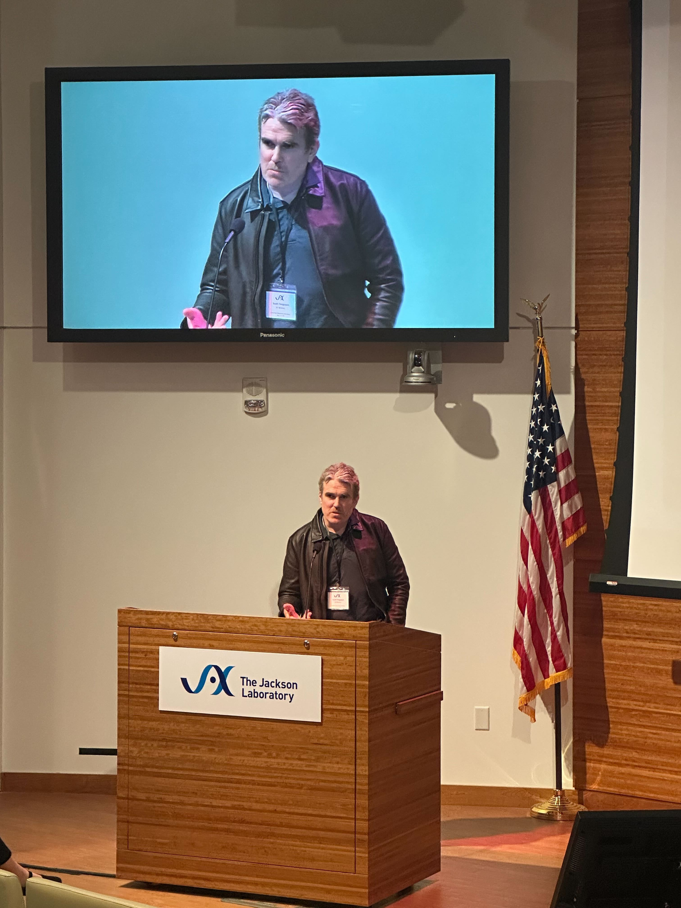
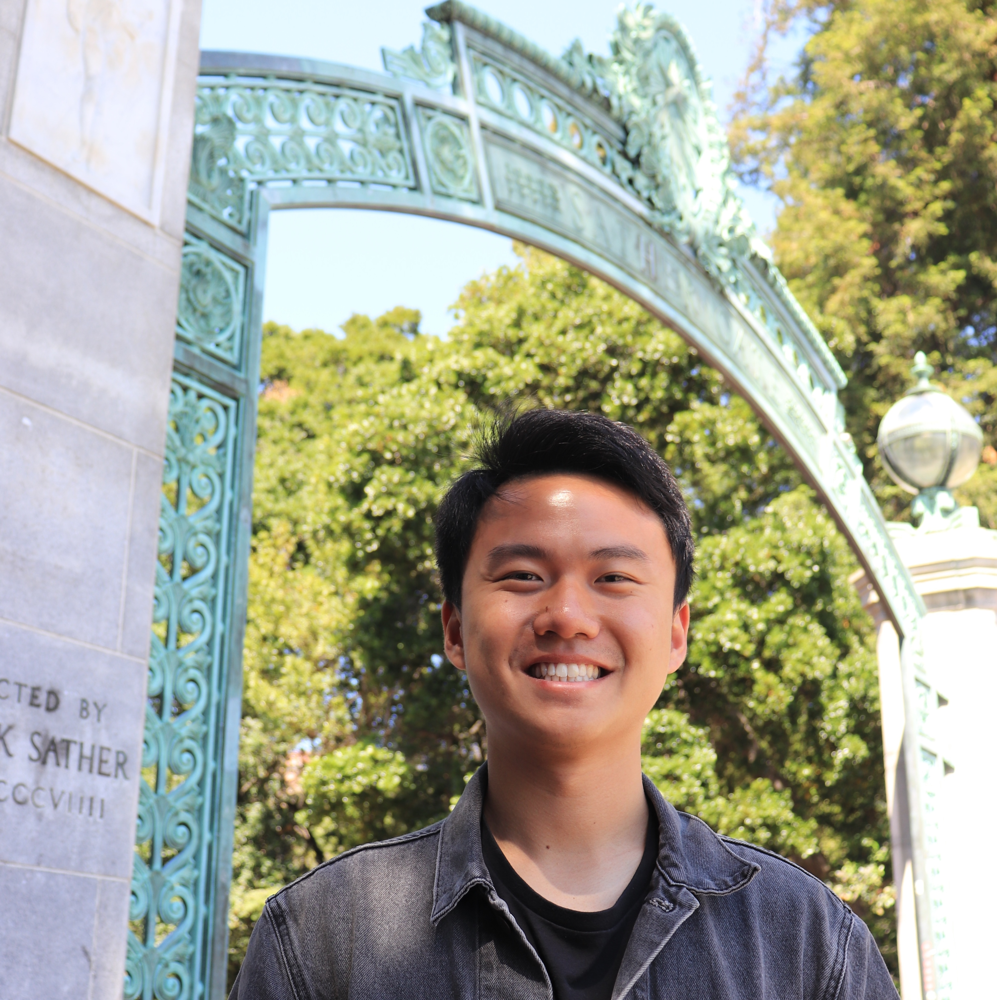
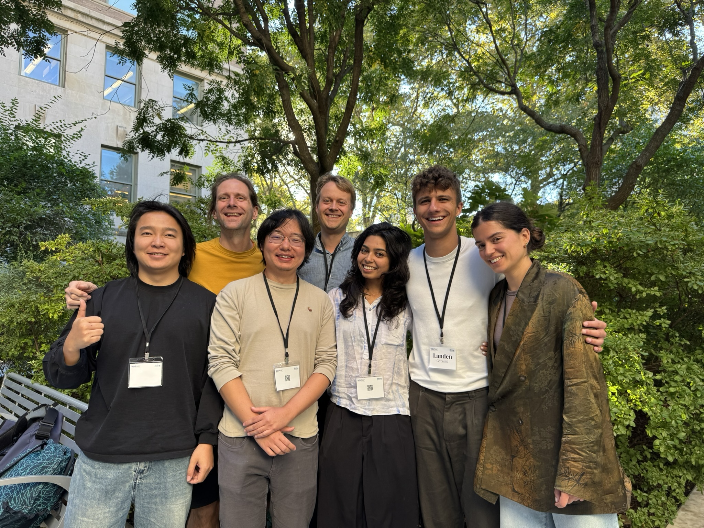
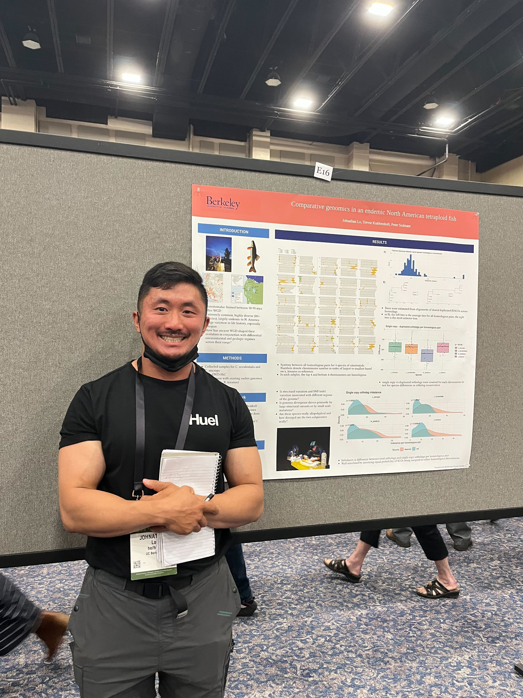

The Sudmant Lab at UC Berkeley uses genomics, computational, statistical, and experimental methods to interrogate genetic and molecular phenotypic diversity at both the organismal and cellular level. We study the evolution, causes, and consequences of aging as well as the evolution of genome structure and cellular diversity.
We are recruiting! more information about joining the lab...
Next CTEG seminar February 19th, 4:00pm
2026/6/7 Joana and co-authors' pre-print, "A Pan-pangenome illuminates complex structural variation and selection in humans, chimpanzees, and bonobos", is posted to bioRxiv!

2025/5/19 Congrats to recently graduated PhD student Samvardhini on the publication of her paper, "Recurrent structural variation and recent turnover at the 17q21.31 locus in humans and great apes" in Nature Communications!

2025/5/15 Congratulations to grad student Michael Singer on being awarded a fellowship from the Keck Foundation to support his work studying the bat immune system!

2025/5/10 Congratulations to postdoc Scott Ferguson on his talk at the Long Read Sequencing Workshop meeting at the Jackson Laboratories, CT!

2025/12/19 Congratulations to Dr. Samvardhini Sridharan for graduating with her Ph.D. in Molecular and Cell Biology!

2025/12/12 Daven and Nicolas' paper 'Machine learning-based prediction of human structural variation and characterization of associated sequence determinants' is posted to bioRxiv!

2025/10/26 Stacy's paper 'Direct identification of de novo mobile element insertions from single molecule sequencing of human sperm' is posted to bioRxiv!
2025/10/1 Peter, Landen, Joana, Nicolas, and Minoli attended the VGP (Vertebrate Genome Project) meeting at Rockefeller University in New York! Congrats to Nicolas and Joana on their presentations!

2025/8/1 We're thrilled to announce that postdoc Joana Rocha will be starting her own lab as an Assistant Professor of Biology at NYU, beginning in January 2026!! Amazing achievement, Joana! Learn more at her faculty website!
2025/6/24 Congrats to John and Nicolas on their presentations at Evolution 2025!
